齊藤 寛人 / Hiroto Saito Hiroto Saito
Dr. Hiroto Saito is an assistant professor in the Research Center for Advanced Science and Technology at the University of Tokyo, Japan. He received his Ph.D. in Frontier Media Science from Graduate School of Advanced Mathematical Sciences, Meiji University, Japan. His research interests include human motor perception and learning, cognitive science about self-attribution and embodiment, and the design of human-computer interaction.
2019年明治大学大学院先端数理科学研究科博士後期課程修了．
2019年東京大学先端科学技術研究センター特任研究員，2022年東京大学先端科学技術研究センター特任助教，2023年東京大学先端科学技術研究センター助教，現在に至る．
運動学習・運動知覚およびそれらの特性を利用したヒューマンコンピュータインタラクションの設計に関する研究に従事．
博士（理学）．
ACM・情報処理学会・VR学会・認知科学会・モーターコントロール研究会各会員．
Works Works
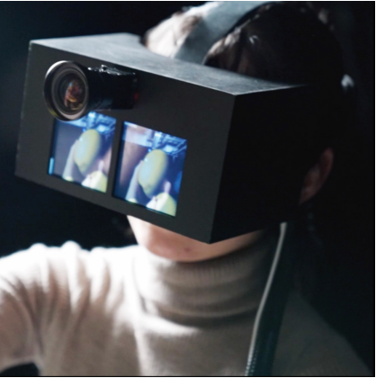
Real-time Slow-motion Series
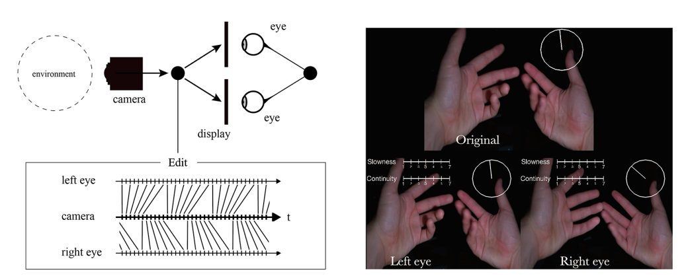
Abstract
リアルタイムとスローモーションは，記録と再生の技術では本質的に両立しない特性である． 本研究では，認知の統合能力と時間特性に基づく並列映像提示を用いて両者の共存を実現する枠組みを提案する． この枠組みでは，カメラ入力を短い時間片に分割し，それらを階層化したタイムラインに配置して時間的に伸長する． その後，すべてのレイヤを合成し，同時にディスプレイへ提示する． この枠組みを組み込んだシースルーゴーグルやデジタルミラーを用いた「Real-time Slow-motion」システムにより，利用者は周囲を体験できる． 特定の条件下では，各レイヤの知覚が認知過程で統合され，リアルタイムとスローモーションの共存が実現する． 本研究は「人への時間編集」という新しい領域を示唆する． Real-time and slow-motion are basically incompatible properties in the technologies of recording and playback. We propose a framework to realize the coexistence of both using parallel video presentation based on the integrative capacity and the temporal nature of cognition. In this framework, camera input is divided into short time durations, distributed into layered timelines, and then stretched out. And then, all layers are composited and presented in a display simultaneously. By using "Real-time Slow-motion" system, users can experience their surroundings through see-through goggles or digital mirrors in which this framework is embedded. Under certain conditions, the perception of the layers is integrated into the cognitive process, resulting in the coexistence of real-time and slow-motion. This research suggests a new field of “Temporal Editing to Humans.”
Publications
Goki Muramoto, Hiroto Saito, Sohei Wakisaka, and Masahiko Inami. 2024. Demonstrating real-time slow-motion experience through parallel video presentation. In SIGGRAPH '24 Emerging Technologies, ACM, Article 5, 1–2. DOI:10.1145/3641517.3664399
Goki Muramoto, Hiroto Saito, Sohei Wakisaka, and Masahiko Inami. 2024. Real-time Slow-motion: A Framework for Slow-motion Without Deviating from Real-time. In AHs '24, ACM, New York, NY, USA, 91–101. DOI:10.1145/3652920.3652947
Links
GOKI MURAMOTO: Real-time Slow-motion 2019-
GOKI MURAMOTO: Chronoanaptoscope 2023

Visual Background Information Modulates Motor Contagions in Humans
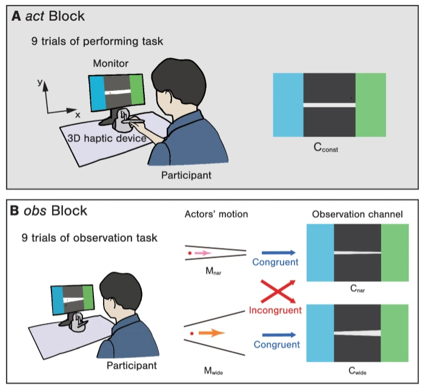
Abstract
運動伝染とは，他者の動作を観察することで自分の動作に生じる無意識の影響を指す． 過去20年間の多くの研究が，観察された動作だけでなく予測された動作も人の運動伝染を引き起こすことを示してきた． しかし，運動伝染は観察される動作の特徴に着目して調べられており，その動作が行われる背景環境が運動伝染を変調するかは不明である． 本研究では，同じ課題を行う俳優の動画を提示した後に，参加者が視覚チャネル内をカーソルで移動するハンドステアリング課題における動作を調べた． 動画に含まれる動作と背景チャネルの整合性を操作し，それらが参加者自身の動作にどのように影響するかを検証した． 観察された動作と背景との間に明確な相互作用が見られた． 観察した動作が速い場合には参加者の動作時間は短く，遅い場合には長くなり，背景が動作と不一致なときにその変化は増幅した． これらの結果は，背景情報が人の運動伝染を変調し得ることを示唆する． Motor contagions refer to implicit effects induced by the observation of actions made by others on one’s own actions. A plethora of studies conducted over the last two decades have demonstrated that both observed and predicted actions can induce various kinds of motor contagions in a human observer. However, motor contagions have always been investigated with regard to different features of an observed action, and it remains unclear whether the background environment in which an observed action takes place modulates motor contagions as well. Here, we investigated participant movements in an empirical hand steering task during which the participants were required to move a cursor through a visual channel after being presented with videos of an actor performing the same task. We manipulated the congruency between the actions shown in the video and the background channels and examined whether and how they affected the participants’ own movements. We observed a clear interaction between the observed action and its background. The movement time of the participants’ actions tended to increase or decrease depending on whether they observed a faster or slower movement, respectively, and these changes were amplified if the background was not congruent with the action contained within it. These results suggest that background information can modulate motor contagions in humans.
Publications
Hiroto Saito, Kentaro Fukuchi, Masahiko Inami, and Gowrishankar Ganesh. 2024. Visual background information modulates motor contagions in humans. Scientific Reports, 14, Article number: 18789. DOI:10.1038/s41598-024-69535-9
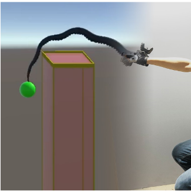
Embodied Tentacle
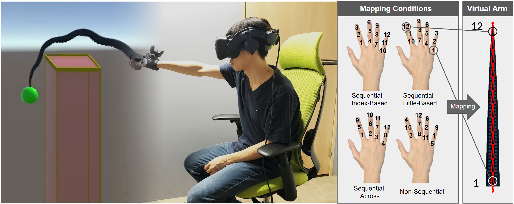
Abstract
人の身体活動を異なる構造の動きに写像することで非人間型の身体を操作すれば，元の身体では困難なタスクを実行できる． しかし，非類似の身体部位を人の身体で制御するために有効なマッピングをどう設計するかが課題である． この課題に対処するため，関節を持つ仮想アームを設計し，マッピング手法が操作者の体験に与える影響を調べた． 具体的には，枝分かれのない12関節のタコのような外観をもつ仮想アームを開発した． このアームを用い，配置が異なる複数のマッピング方式がタスク成績や身体所有感，嗜好に与える影響を比較するユーザスタディを行った． その結果，「視覚的・配置的類似性」「利用者に適した運動学」「日常動作との対応」という三つの重要因子を特定した． これらの知見に基づき，非人間型身体の操作におけるマッピングデザインを論じる． Manipulating a non-humanoid body using a mapping approach that translates human body activity into different structural movements enables users to perform tasks that are difficult with their innate bodies. However, a key challenge is how to design an effective mapping to control non-analogous body parts with the human body. To address this challenge, we designed an articulated virtual arm and investigated the effect of mapping methods on a user’s manipulation experience. Specifically, we developed an unbranched 12-joint virtual arm with an octopus-like appearance. Using this arm, we conducted a user study to compare the effects of several mapping methods with different arrangements on task performance and subjective evaluations of embodiment and user preference. As a result, we identified three important factors in mapping: “Visual and Configurational Similarity”, “Kinematics Suitability for the User”, and “Correspondence with Everyday Actions.” Based on these findings, we discuss a mapping design for non-humanoid body manipulation.
Publications
Shuto Takashita, Ken Arai, Hiroto Saito, Michiteru Kitazaki, and Masahiko Inami. 2024. Embodied Tentacle: Mapping Design to Control of Non-Analogous Body Parts with the Human Body. In CHI '24, ACM, New York, NY, USA, Article 222, 1–19. DOI:10.1145/3613904.3642340
Links
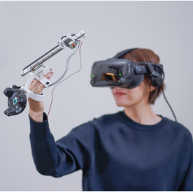
WeightMorphy
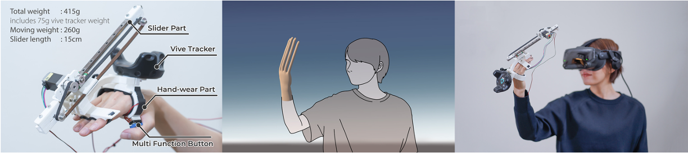
Abstract
5分間程度のVRトレーニングによって，今まで成功したことが無い技の習得を支援するけん玉トレーニングシステムである「けん玉できた！VR」を開発． VR空間で時間の進み方を遅くし，ゆっくりと玉が動く空間でけん玉を練習できるようにした． その状態から玉の動きを徐々に通常に近づけることによって，つまずきの少ないスムーズな上達を促した． また，玉の速度を遅くしたVR空間で，実際に熟練者がプレイした身体動作をキャプチャし，それをバーチャルなお手本として提示した． 本システムの体験者1128人のうち，1087人（96.4%）が今まで成功したことが無いけん玉の技を習得した． また，時間の進み方を調整する機能の有るVRけん玉トレーニングと，調整機能の無いVRけん玉トレーニングを比較して前者の方が習熟度向上の効果が高い可能性を示した． We propose WeightMorphy, a hand-mounted system designed to improve teleoperation manipulation’s operability and immersive experience by changing the moment of inertia. This system reduces the discrepancy between the shape of the virtual hand and its corresponding moment of inertia, enabling instantaneous control by the user while maintaining accuracy. We have provided a detailed description of the design and concept of our system and conducted experiments to examine the effect of shifting the center of gravity on the operability of the deformable virtual hand using WeightMorphy.
Publications
Naoki Okamoto, Masaharu Hirose, Sohei Wakisaka, Hiroto Saito, Atsushi Izumihara, and Masahiko Inami. 2023. WeightMorphy: A Dynamic Weight-Shifting Method to Enhance the Virtual Experience with Body Deformation. In Proceedings of the 2023 ACM International Symposium on Wearable Computers (ISWC '23), ACM, New York, NY, USA, 71–75. DOI:10.1145/3594738.3611367
岡本直樹, 廣瀬雅治, 脇坂 崇平, 齊藤寛人, 泉原厚史, 稲見昌彦. 重心移動を用いた手部身体の変形システムの検討. 第21回計測自動制御学会システムインテグレーション部門講演会 (SICE SI 2020), 2020年12月.
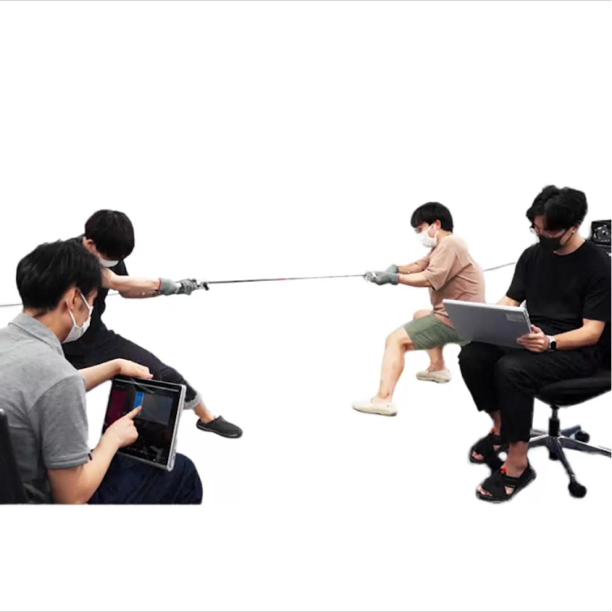
Machine-Mediated Teaming
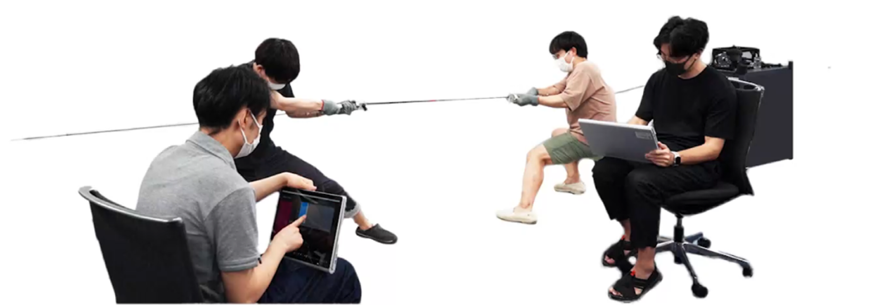
Abstract
技術の進歩によって，新しいスポーツや身体活動の可能性が広がっている． 本研究では，人と代理となる機械がチームを組んでフィジカルなスポーツゲームに参加する「Machine-Mediated Teaming」という概念を提案する． この概念を実現するための体験と設計指針を理解するべく，綱引きをベースにしたケーススタディ用システムを構築した． 本システムは2対2でプレーするスポーツゲームである． 各チームは，実際にロープを引くプレイヤー1名と，機械のアクチュエータを操作してフィジカルゲームに参加するプレイヤー1名で構成される． この形態のスポーツ体験を調べ，将来のマシン仲介チーム研究に資する示唆を得るために，本システムを用いたユーザスタディを実施した． スタディで得られたデータに基づき，今後のマシン仲介チームシステムを設計する際に考慮すべき「機械のスタミナ」「行動空間」「明示的フィードバック」の3つの観点を明らかにした． 本研究は，人と機械が高いダイナミックさをもつ身体インタラクションで共存するための探索に向けた第一歩を示す． Technological advancement has opened up opportunities for new sports and physical activities. We introduce a concept called machine-mediated teaming, in which a human and a surrogate machine form a team to participate in physical sports games. To understand the experience of machine-mediated teaming and the guidelines for designing the system to achieve the concept, we built a case study system based on tug-of-war. Our system is a sports game played by two against two. One team consists of a player who actually pulls the rope and another player who participates in the physical game by controlling the machine’s actuators. We conducted user studies using this system to investigate the sport experience in this form and to reveal insights to inform future research on machine-mediated teaming. Based on the data obtained from the user studies, we clarified three perspectives, machine stamina, action space, and explicit feedback, that should be considered when designing future machine-mediated teaming systems. The research presented in this paper offers a first step towards exploring how humans and machines can coexist in highly dynamic physical interactions.
Publications
Azumi Maekawa, Hiroto Saito, Daisuke Uriu, Shunichi Kasahara, and Masahiko Inami. 2022. Machine-Mediated Teaming: Mixture of Human and Machine in Physical Gaming Experience. In CHI '22, ACM, New York, NY, USA, 11 pages. DOI:10.1145/3491102.3517555
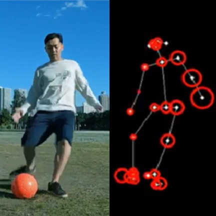
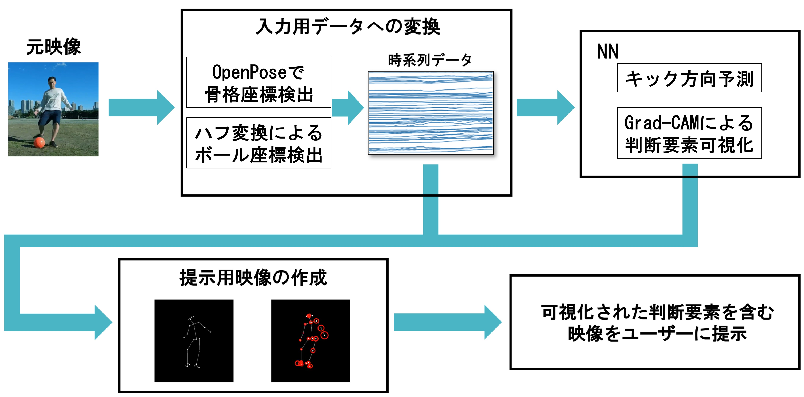
Teaching System of Judgment Basis Using Neural Network on Predicting Kick Direction in Football
Abstract
スポーツにおいては，他者の動作の特徴に基づいて結果を正確に予測し，それに適切に応答することが重要である． 先行研究では，機械学習で動作を予測し，結果を利用者に提示するシステムが提案されてきた． しかし，機械学習によって構築された判断根拠が，人が動作を正確に予測するうえで有用かどうかは不明である． 本研究では，サッカーのペナルティキックの蹴る方向を予測するニューラルネットワークを開発し，その判断根拠を抽出した． さらに，抽出した判断根拠が参加者の予測に有用かを検証した． その結果，参加者は当初それを戦略として用いていなかったにもかかわらず，抽出された判断根拠を妥当だと感じたことが示唆された． 加えて，テキストによる教示を行った条件では，判断に対する確信度が向上し，学習前後で予測精度が有意に増加する結果が得られた． In sports, it is essential to accurately predict the results of others’ actions based on the movements’ characteristics and respond appropriately to them. Previous studies have proposed systems that predict motions using machine learning and present these results to users. However, it remains unclear whether the judgment basis constructed by machine learning is useful for humans to predict movements accurately. This study developed a Neural Network that predicted the kicking direction of soccer penalty kicks and extracted the basis. Also, we tested whether the extracted basis was useful for participants in their predictions. The results showed that participants perceived the extracted basis as valid, even though they had not used it as a strategy at first.
Publications
本多 拓実, 齊藤 寛人, 脇坂 崇平, 稲見 昌彦. サッカーでのキック方向予測におけるニューラルネットワークを用いた判断根拠の教示システム, 日本バーチャルリアリティ学会論文誌,2022, Vol.27 No.4, pp.393-402. DOI:10.18974/tvrsj.27.4_393
Links
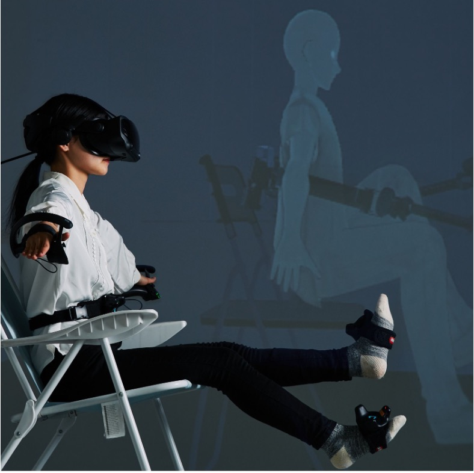
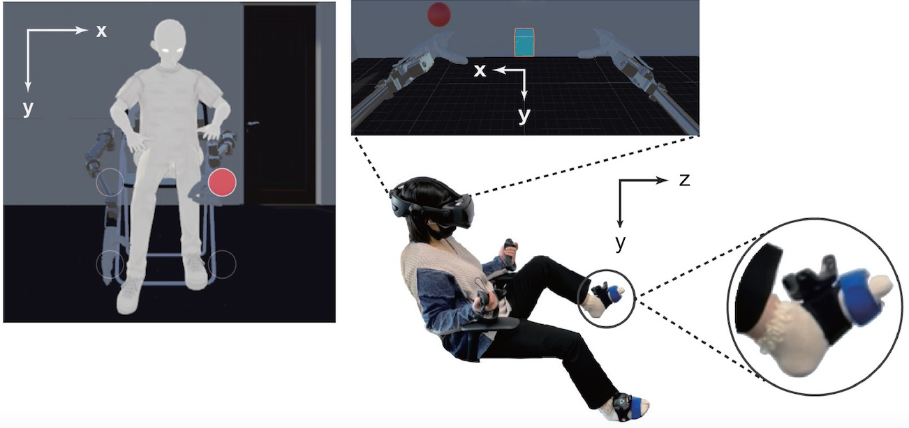
Embodiment of supernumerary robotic limbs in virtual reality
Abstract
余剰ロボット肢システムは，人工的に設計された追加の手足を加えることで利用者の運動機能を拡張する． システムを自分の身体の一部のように身体化し，認知的負荷を抑えた認知的透明性を維持することが重要である． 身体機能の拡張に関する研究は，これまで「代替」や「延長」を通じて行われてきた． しかし，余剰の身体部位を「追加」する研究はほとんどなかった． 本研究では，仮想環境で動作する超数ロボット肢システムを開発し，アンケートと視覚―触覚のクロスモーダル整合課題を用いて，追加肢が自分の身体の一部とみなせるか，近位空間知覚が変化するかを評価した． その結果，参加者は超数ロボット肢システムを使用した後，追加の手足を身体化できることが分かった． また，クロスモーダル整合課題での知覚変化と，「腕の本数が増えた」という主観的感覚（余剰肢感覚）との間に正の相関があることを確認した． これらの結果は，追加の身体部位が，本来の身体部位とは異なる新たな身体部位を機能拡張によって獲得したと感じさせる可能性を示唆する． The supernumerary robotic limb system expands the motor function of human users by adding extra artificially designed limbs. It is important for us to embody the system as if it is a part of one’s own body and to maintain cognitive transparency in which the cognitive load is suppressed. Embodiment studies have been conducted with an expansion of bodily functions through a “substitution” and “extension”. However, there have been few studies on the “addition” of supernumerary body parts. In this study, we developed a supernumerary robotic limb system that operates in a virtual environment, and then evaluated whether the extra limb can be regarded as a part of one’s own body using a questionnaire and whether the perception of peripersonal space changes with a visuotactile crossmodal congruency task. We found that the participants can embody the extra-limbs after using the supernumerary robotic limb system. We also found a positive correlation between the perceptual change in the crossmodal congruency task and the subjective feeling that the number of one’s arms had increased (supernumerary limb sensation). These results suggest that the addition of an extra body part may cause the participants to feel that they had acquired a new body part that differs from their original body part through a functional expansion.
Publications
Ken Arai, Hiroto Saito, Masaaki Fukuoka, Sachiyo Ueda, Maki Sugimoto, Michiteru Kitazaki, and Masahiko Inami. 2022. Embodiment of supernumerary robotic limbs in virtual reality. In Scientific Reports, 12, Article number: 9769. DOI:10.1038/s41598-022-13981-w
Links
JST ERATO Inami JIZAI body project - project page
Supernumerary virtual robotic arms can feel like part of our body (EurekAlert!)
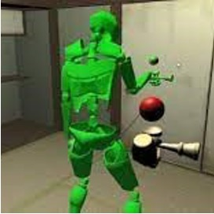
VR Kendama
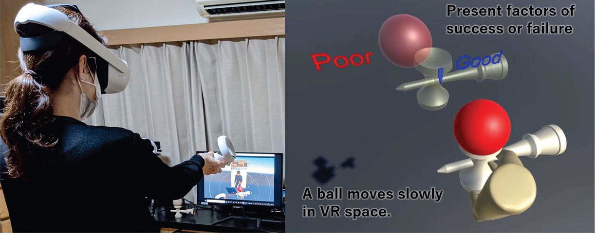
Abstract
5分間程度のVRトレーニングによって，今まで成功したことが無い技の習得を支援するけん玉トレーニングシステムである「けん玉できた！VR」を開発． VR空間で時間の進み方を遅くし，ゆっくりと玉が動く空間でけん玉を練習できるようにした． その状態から玉の動きを徐々に通常に近づけることによって，つまずきの少ないスムーズな上達を促した． また，玉の速度を遅くしたVR空間で，実際に熟練者がプレイした身体動作をキャプチャし，それをバーチャルなお手本として提示した． 本システムの体験者1128人のうち，1087人（96.4%）が今まで成功したことが無いけん玉の技を習得した． また，時間の進み方を調整する機能の有るVRけん玉トレーニングと，調整機能の無いVRけん玉トレーニングを比較して前者の方が習熟度向上の効果が高い可能性を示した． We developed a system for augmenting humans’ ability to learn Kendama tricks through virtual reality (VR) training. It is often considered to be difficult to play because the ball moves fast, and it is difficult to understand the factors that lead to the success or failure. With this system, we reduced the difficulty of Kendama by slowing down the speed of the ball within a VR space. In addition, this system used the results of detailed measurements of the factors that lead to the success or failure and presented its information to users in an easy-to-understand manner. As a result of the experiment, we confirmed that VR training which used the proposed method has the potential to increase the proficiency of the users in both physical and VR spaces as well as their confidence in succeeding, as compared to VR training which did not.
Publications
Hitoshi Kawasaki, Sohei Wakisaka, Hiroto Saito, Atsushi Hiyama, and Masahiko Inami. 2022. A System for Augmenting Humans’ ability to Learn Kendama Tricks through Virtual Reality Training. In Proceedings of the Augmented Humans International Conference 2022 (AHs '22), Association for Computing Machinery, New York, NY, USA, 152–161. DOI:10.1145/3519391.3519404
川崎仁史, 脇坂崇平, 笠原俊一, 齊藤寛人, 原口純也, 稲見昌彦. けん玉できた！VR：数分間のVRトレーニングによってけん玉の技の習得を支援するシステム. 情報処理学会 エンタテイメントコンピューティング2020(EC 2020), 2020年8月.
Links
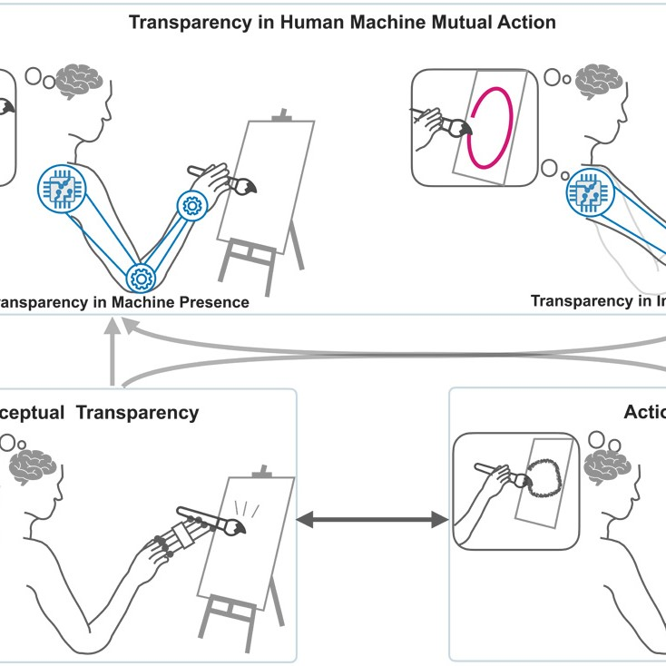
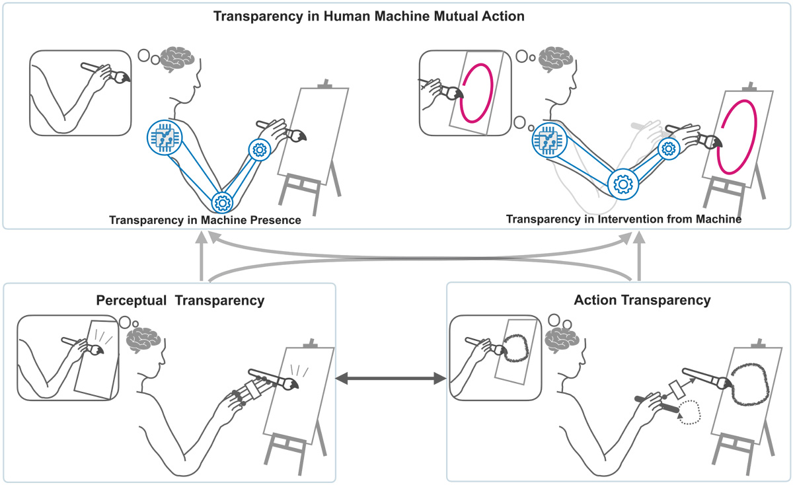
Transparency in Human-Machine Mutual Action
Abstract
人とコンピュータの統合（HInt）の近年の進展は，人と機械が互いに自律的に作用し合う人間機械システムの開発に焦点を当てている． しかしそのようなシステムを設計する際の重要な課題は，利用者の身体能力を拡張しつつ，自己帰属感を維持することである． この課題は，人と機械が互いに作用し合う human-machine mutual action (HMMA) システムにおいて特に顕著である． この課題に対処するため，本研究では「透明性」の概念に基づく設計フレームワークを提示する． HInt における透明性を，機械が利用者の行為に介入するとき，利用者がその体験をどの程度自己帰属できるかの度合いとして定義する． 本フレームワークを用いて，HMMA システムを設計するためのデザインガイドラインとアプローチを構築する． 透明性に焦点を当てることで，人と機械を単一のエージェントへ融合させるだけでなく，融合度を自在に制御するための設計アプローチを提供することを目指す． 本研究では，既存の HMMA システムの研究を分析し，本設計アプローチの有効性を示す． さらに本設計アプローチの発展と，HInt および HMMA システム設計の今後の展望について述べる． Recent advances in human-computer integration (HInt) have focused on the development of human-machine systems, where both human and machine autonomously act upon each other. However, a key challenge in designing such systems is augmenting the user’s physical abilities while maintaining their sense of self-attribution. This challenge is particularly prevalent when both human and machine are capable of acting upon each other, thereby creating a human-machine mutual action (HMMA) system. To address this challenge, we present a design framework that is based on the concept of transparency. We define transparency in HInt as the degree to which users can self-attribute an experience when machines intervene in the users’ action. Using this framework, we form a set of design guidelines and an approach for designing HMMA systems. By using transparency as our focus, we aim to provide a design approach for not only achieving human-machine fusion into a single agent, but also controlling the degrees of fusion at will. This study also highlights the effectiveness of our design approach through an analysis of existing studies that developed HMMA systems. Further development of our design approach is discussed, and future prospects for HInt and HMMA system designs are presented.
Publications
Hiroto Saito, Arata Horie, Azumi Maekawa, Seito Matsubara, Sohei Wakisaka, Zendai Kashino, Shunichi Kasahara, and Masahiko Inami. 2021. Transparency in Human-Machine Mutual Action. In Journal of Robotics and Mechatronics, Vol.33, No.5, pp. 987-1003. DOI:10.20965/jrm.2021.p0987
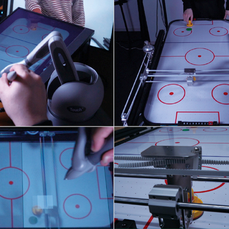
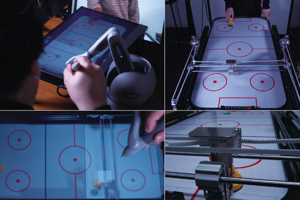
Behind the Game
Abstract
対人スポーツを遠隔でプレーすると，行為とフィードバックの時間遅れがパフォーマンスとエージェンシーを低下させる． 計算的支援はパフォーマンスを改善できるが，文脈に依存しない安直な介入はエージェンシーを損なう． 私たちは，空気ホッケーを題材に，パフォーマンスとエージェンシーを両立させるコンテキスト依存の支援手法を提案する． システムはテーブル半面のストライカーを動かす2Dプロッタ型の機械と，遠隔操作を可能にするウェブアプリから構成される． これにより，遠隔プレイヤーはどこからでもブラウザ経由で物理的な対戦相手と対戦できる． 我々はリアルタイム映像からパック軌道を予測し，コンテキストに基づいてストライカー制御支援を設計した． この支援により，遠隔プレイヤーはエージェンシーを損なうことなくパフォーマンスが向上し，双方がゲームの興奮を体験できる． When playing inter-personal sports games remotely, the time lag between user actions and feedback decreases the user’s performance and sense of agency. While computational assistance can improve performance, naive intervention independent of the context also compromises the user’s sense of agency. We propose a context-aware assistance method that retrieves both user performance and sense of agency, and we demonstrate the method using air hockey (a two-dimensional physical game) as a testbed. Our system includes a 2D plotter-like machine that controls the striker on half of the table surface, and a web application interface that enables manipulation of the striker from a remote location. Using our system, a remote player can play against a physical opponent from anywhere through a web browser. We designed the striker control assistance based on the context by computationally predicting the puck’s trajectory using a real-time captured video image. With this assistance, the remote player exhibits an improved performance without compromising their sense of agency, and both players can experience the excitement of the game.
Publications
Maekawa, Azumi, Hiroto Saito, Narin Okazaki, Shunichi Kasahara, and Masahiko Inami. 2021. Behind The Game: Implicit Spatio-Temporal Intervention in Inter-Personal Remote Physical Interactions on Playing Air Hockey. In ACM SIGGRAPH 2021 Emerging Technologies (SIGGRAPH ’21). Association for Computing Machinery, New York, NY, USA, Article 9, 1–4. DOI:10.1145/3450550.3465348
Links
JST ERATO Inami JIZAI body project - project page
SIGGRAPH 2021 EMERGING TECHNOLOGIES DEMONSTRATE PANDEMIC PERSEVERANCE
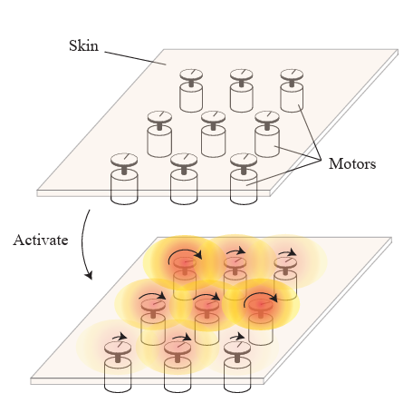
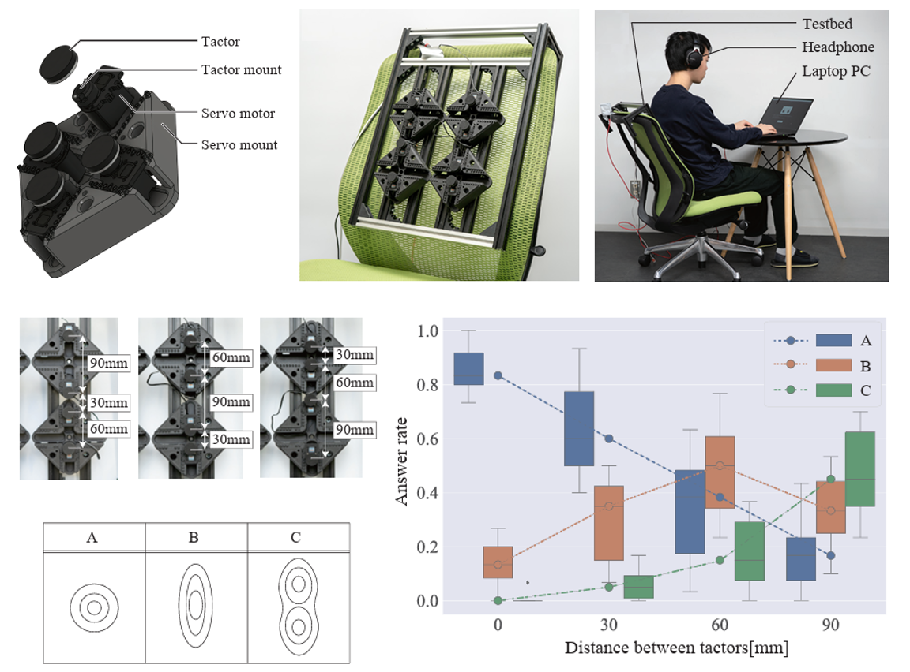
Designing Distributed-type Haptic Device based on Rotational Skin Stretch
Abstract
我々は，皮膚に回転せん断変形を提示する複数の刺激要素を備えた触覚ディスプレイを提案した． 皮膚へのせん断変形刺激は，小型デバイスにおける力の知覚に利用可能であり，これまでに数多くの手法が提案されている． その中でも，空間的なせん断刺激の分布を提示する手法は，高い現実感をもって皮膚感覚を再現する方法として期待されている． 本研究では，回転モーターを用いて皮膚に回転せん断変形を提示する複数の刺激要素を備えた触覚ディスプレイを提案する． 回転モーターは制御が容易で，様々な身体部位に応用可能なスケーラビリティを備えた汎用性の高いアクチュエータである． 本論文では，この手法の応用例として，背部におけるせん断変形刺激の分布を提示可能な装置を設計する． 特に，回転式触覚刺激装置のサイズと装置間の距離といった形状要素に着目し，知覚実験を行った． その結果，触覚刺激装置のサイズが20mmの場合，回転方向が知覚されず刺激強度のダイナミックレンジが最大化され，装置間距離が60mm以下であれば背部に空間的に連続した刺激を提示できることが判明した． We proposed a tactile display with multiple stimulus elements that present rotational shear deformation on the skin, and describe the design of a device that applies the proposed method to the back. Shear deformation stimulation to the skin can be used to perceive force in a small device, and numerous methods have been proposed. Among them, methods that present the distribution of spatial shear stimuli are expected to be a method to reproduce skin sensations with high reality. In this study, we propose a tactile display with multiple stimulus elements that present rotational shear deformation to the skin using a rotating motor. A rotary motor is a widely used actuator that is easy to control, and can be scaled to apply to various body parts. In this paper, we design a device that can present the distribution of shear deformation stimuli in the back as an example of the application of this method. In particular, we focused on the size of the rotating tactors and the distance between the tactors among the form factors, and conducted a perception experiment. It was found that when the size of the tactor was 20 mm, the direction of rotation was not perceived and the dynamic range of the intensity of the stimulus was maximized, and spatially continuous stimuli could be presented to the back if the distance between the tactors was 60 mm or less.
Publications
堀江 新, 下林 秀輝, 齊藤 寛人, 稲見 昌彦. 回転の皮膚せん断変形に基づく分布型触覚ディスプレイの設計. 日本バーチャルリアリティ学会論文誌, 2020, Val.25, No.4, p. 402-411. DOI:10.18974/tvrsj.25.4_402
Links
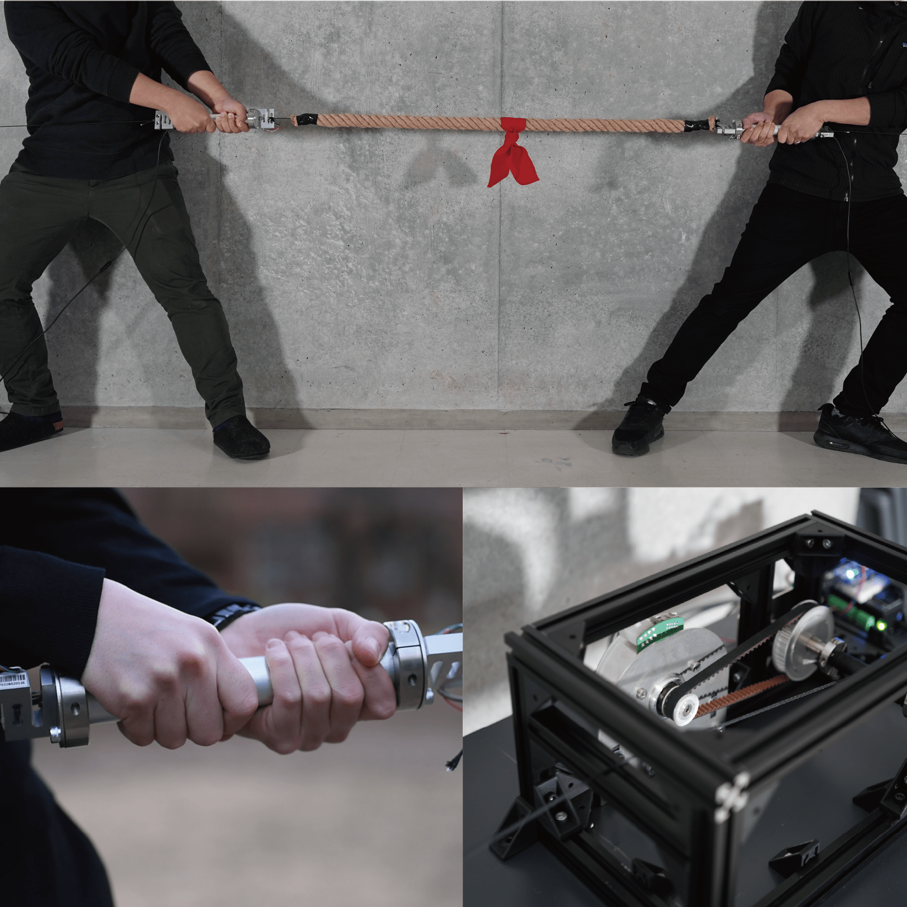
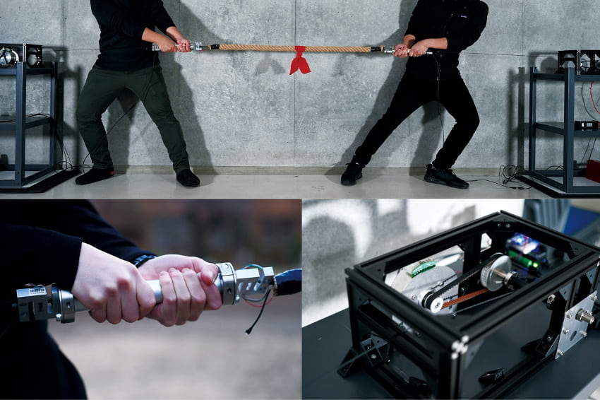
The Tight Game
Abstract
フィジカルアシストはプレイヤ間の能力差を緩和し，均衡した対人ゲームを実現できる． しかし「明示的」な介入はプレイヤのエージェンシーを損ない，プレイヤと観客双方の没入を失わせる． 本研究では，一次元の綱引きを対象に，暗黙の物理介入システム「The Tight Game」を提案する． システムはロープに接続した4つの力センサと，隠された高トルクモータ2基から構成され，リアルタイムの物理支援を提供する． 人が動作中に感じる外力の知覚を利用して，暗黙的な物理支援を設計した． The Tight Game では，プレイヤは綱引きを行い，均衡した接戦をしていると信じる． 実際には，外部のシステムや人がゲームを仲介し，プレイヤが気付かないように物理介入を行っている． Physical assistance can alleviate individual differences of abilities between players to create well-balanced inter-personal physical games. However, ‘explicit’ intervention can ruin the players’ sense of agency, and cause a loss of engagements in both the player and audience. We propose an implicit physical intervention system ”The Tight Game” for ‘Tug of War’ a one-dimensional physical game. Our system includes four force sensors connected to the rope and two hidden high torque motors, which provide realtime physical assistance. We designed the implicit physical assistance by leveraging human recognition of the external forces during physical actions. In The Tight Game, a pair of players engage in a tug of war, and believe that they are participating in a well balanced, tight game. In reality, however, an external system or person mediates the game, performing physical interventions without the players noticing.
Publications
Azumi Maekawa, Shunichi Kasahara, Hiroto Saito, Daisuke Uriu, Gowrishankar Ganesh, and Masahiko Inami. 2020. The Tight Game: Implicit Force Intervention in Inter-personal Physical Interactions on Playing Tug of War. In ACM SIGGRAPH 2020 Emerging Technologies (SIGGRAPH ’20). Association for Computing Machinery, New York, NY, USA, Article 10, 1–2. DOI:10.1145/3388534.3407301
Links
JST ERATO Inami JIZAI body project - project page
SIGGRAPH 2020 TO SPOTLIGHT 20 TRANSFORMATIVE, EMERGING TECHNOLOGIES
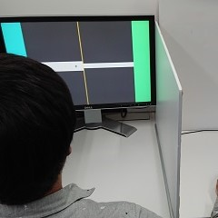
Analysis of the Causes of Pseudo-haptics Using the Motion Mislearning during Steering Task
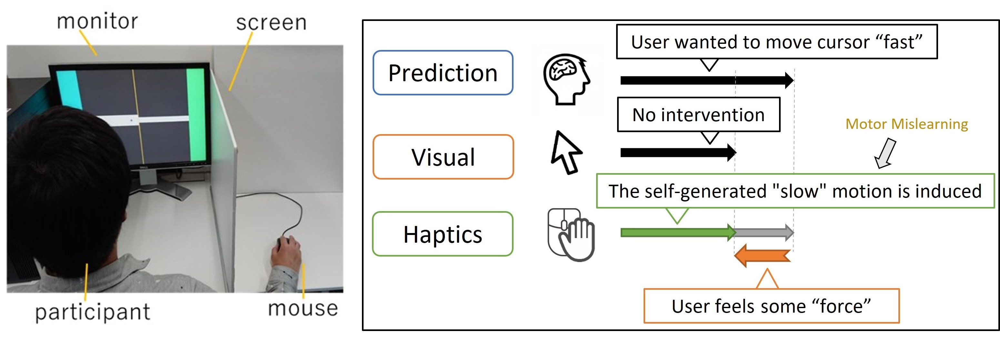
Abstract
先行研究では，擬似ハプティクスは視覚と触覚の不一致によって生じる感覚錯覚だと述べられている． しかしこの不一致は，随意運動の結果としても解釈できる． 視覚―ハプティクスの不一致が，なぜ随意運動ではなく受動的な力として知覚されるのかは不明である． 我々は，受動力の錯覚はハプティクスではなく，視覚フィードバックと運動予測の不一致によって生じると仮説を立てた． この仮説を検証するため，運動誤学習を用いて，視覚と触覚の整合を保ったまま，運動予測と視覚フィードバックの不一致を生じさせる実験を行った． 被験者はステアリング課題中に感じた受動力の大きさを報告した． その結果，運動予測と視覚フィードバックの不一致が擬似ハプティクスを生じさせる可能性を確認した． Previous studies described that Pseudo-haptics is a sensory illusion caused by the conflict between visual and haptic perception. However, this conflict could be interpreted as a result of voluntary movement. It remains unclear as to why the visuo-haptic conflict is interpreted as a passive force, not a voluntary movement. We hypothesized that the illusion of the passive force is caused by the conflict between visual feedback and motor prediction, not the haptic perception. To test this hypothesis, we performed an experiment using motor mislearning to modulate the motion of the voluntary movement that causes a conflict between motor prediction and visual feedback even if maintained congruence between visual and haptic feedback. In this experiment, subjects informed the magnitude of passive force felt subjectively during the steering task using the mouse. As a result, we confirmed the possibility that the conflict between motor prediction and visual feedback causes Pseudo-haptics.
Publications
齊藤寛人, 福地健太郎. 運動伝染が生み出す運動予測の変調を利用したPseudo-haptics の生起要因の分析, 情報処理学会 インタラクション2019論文集 (インタラクション2019 一般講演), pp.112-121. PDF
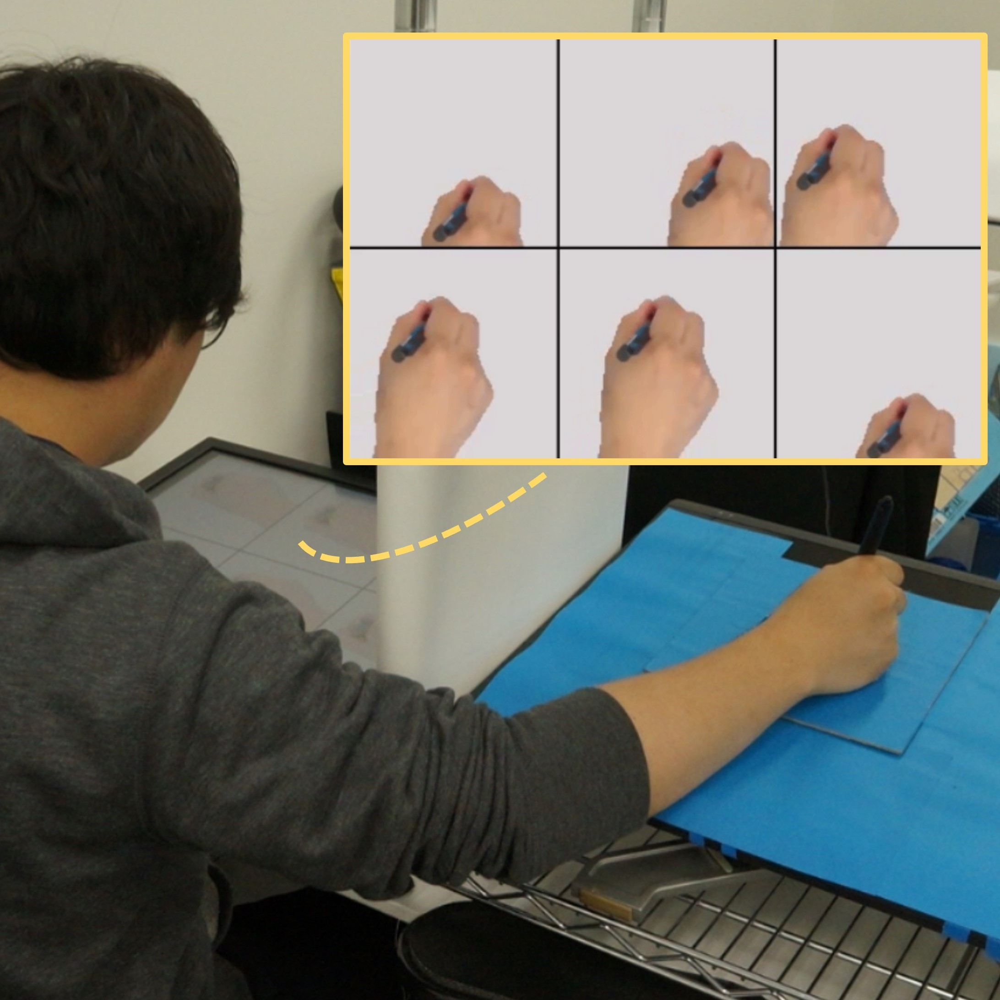
The Effect of Predictability of Visual Motion from Motor Commands on the Recognition Process of Self-Attribution
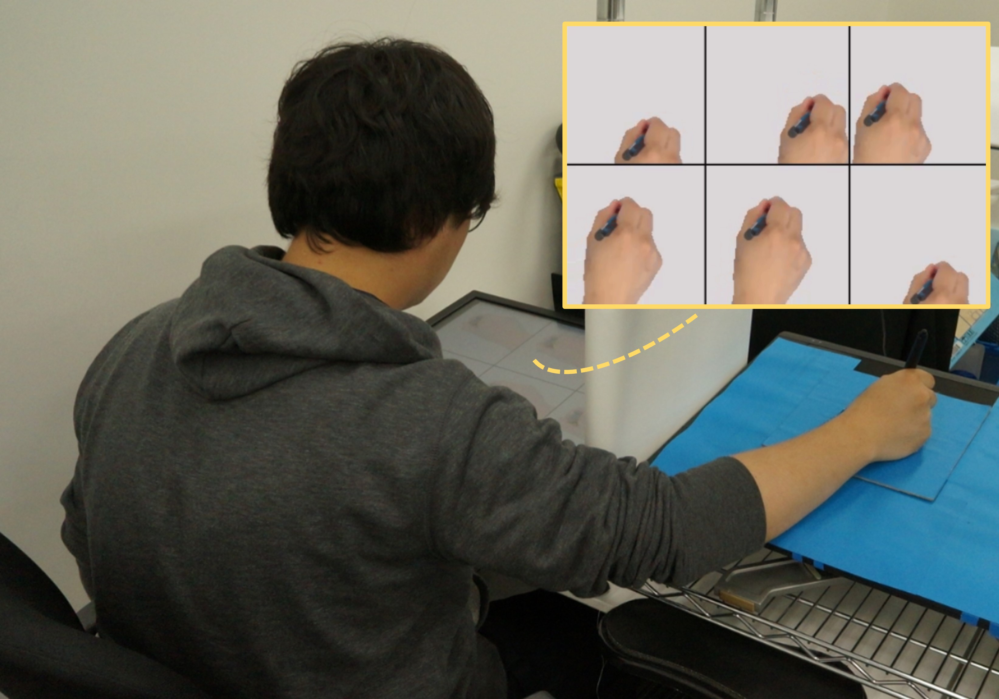
Abstract
自己帰属感の認識過程は，主に視覚と固有感覚の一致，および視覚情報と運動指令による予測の一致によって生じるとされてきた． しかし，随意運動中にどの一致が主要な役割を果たすのかは明らかでない． 我々は，参加者の手画像を様々な回転角で提示して視覚と固有感覚の不一致を導入しつつ，運動指令からの予測と固有感覚を分離するユーザスタディを実施した． 参加者の手の動きを制限し，画像が回転していても運動指令から手画像の視覚的動きを予測できるようにした． その結果，運動予測が自己帰属感の認識過程に主要な役割を果たし，その予測可能性は動きのパターンと手画像の見た目に依存することが示された． The recognition process of self-attribution, which is mainly caused by congruence between visual and proprioceptive information and between visual information and prediction from motor commands, has been extensively studied. However, it is still unclear as to which congruence plays the primary role in the process during the voluntary movements. We conducted a user study that distinguishes proprioceptive information and prediction from motor commands by displaying the modified images of the participants' hands in various rotation angles; this introduced the conflict between visual and proprioceptive information. The hand motions of the participants were restricted so that they could predict the visual motion of the images of their hands by the motor command even while the images were rotated. The result indicates that motion prediction plays a primary role in the recognition process of self-attribution, and this predictability depends on the motion pattern and appearance of the hand images.
Publications
Hiroto Saito and Kentaro Fukuchi. 2018. The Effect of Predictability of Visual Motion from Motor Commands on the Recognition Process of Self-Attribution. In Extended Abstracts of the 2018 CHI Conference on Human Factors in Computing Systems (CHI EA '18). Association for Computing Machinery, New York, NY, USA, Paper LBW124, 1–6. DOI:10.1145/3170427.3188512
齊藤寛人, 福地健太郎. 視覚的運動の予測可能性が自己帰属感の生起過程に及ぼす影響の調査, ヒューマンインタフェース学会論文誌, 2018, Vol.20, No.3, pp.301-310. DOI:https://doi.org/10.11184/his.20.3_301